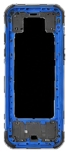
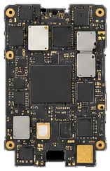
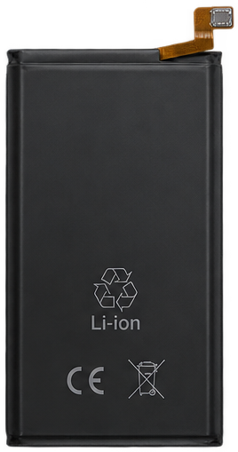
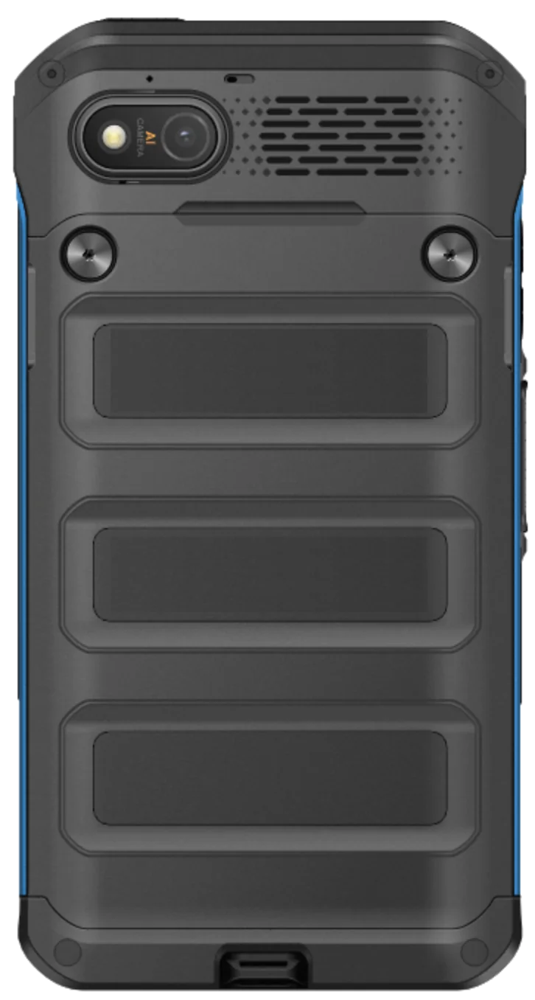
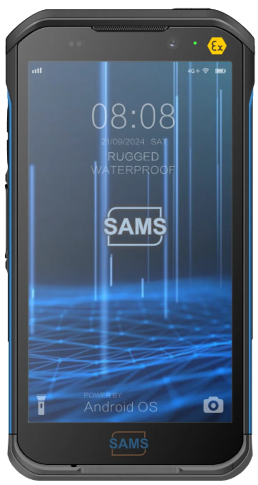
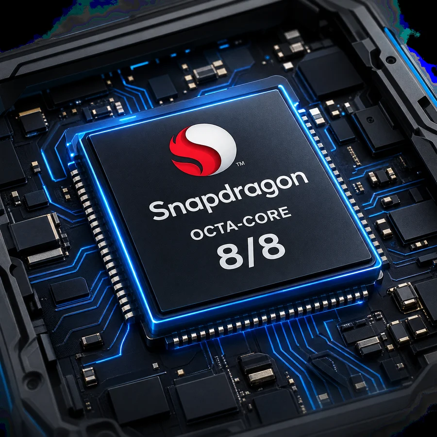
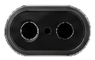
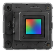
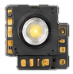
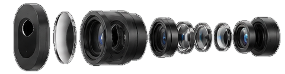

White ground to match index-ref.html — standalone prototype, not wired into the live site.
5 acts (Design → Performance → Display → Imaging → OS) share one sticky stage; the left rail
tracks progress and a dot-halftone dissolve bridges every transition. Design now explodes the real
internal components (frame, board, battery, camera module — all cropped from your teardown reference
sheets, not generated) along one shared axis, with the whole rig rotated into landscape - then, once
reassembled, un-rotates back to portrait and matches Performance's exact size, so the handoff between
them is one continuous phone instead of two differently-oriented ones ghosting through each other.
Performance's
chip reveal uses your real Snapdragon chipset photo, holds with a platform detail panel, then zooms
back out, returns to portrait, and flips to the rear lens on the way into Imaging - which now
assembles the real camera parts (ring, window, lens stack, sensor, flash) exactly like Design's
internal-parts rig, just upright instead of rotated, with offsets sized to fit the frame, and now
carries the same premium per-component side callouts (name + real spec, alternating left/right) ported
over from the standalone camera exploded-view prototype, recoloured for this white theme. The lens
stack is now the last part to appear (deepest component, revealed right before reassembly) and paints
on top instead of behind ring/sensor/flash (a real DOM-order bug - its rise timing had moved to last,
but the markup order hadn't, so later parts still covered it). Ring, window, sensor and flash now clear
away together the moment the lens stack rises, so it gets to stand alone as the hero, rather than all
five sitting accumulated on screen together. Once everything closes back up, a small pin callout - now
positioned clear of the housing instead of overlapping it - marks the lens stack's real position before
the rear panel rotates from back to front, handing straight into Display.
Every act's phone is pinned to the exact same centre point, and adjacent acts genuinely overlap at
their shared boundary so the phone is never off-screen between sections. Display and OS are still
simple placeholders.
SAMS — Smart Ex-04Category Walkthrough





01 · Design
Built for the real world.
Rugged outer frame.
MIL-STD-810HDie-cast frame
Engineered to perform.
Flagship-class octa-core platform running enterprise apps, scanning and video calls without throttling.
Octa-core platform
Power at the core.
Full-shift capacity with intrinsically safe charging circuitry and low-temperature operation.
4,000 mAhLi-Polymer
Precision camera system.
High-resolution inspection imaging with phase-detect autofocus and LED flash for dark plant areas.
50 MP · PDAF
Protected from within.
Designed for IECEx, ATEX and NEC 500 gas and dust atmospheres — certification in progress — and sealed to IP68 against dust and continuous immersion.
IP68Ex ia IIC T4
02 · Performance
Flagship silicon, intrinsically safe.
Octa-core4,000 mAhFull-shift rated

Qualcomm Snapdragon
Octa-core platform, built to last a shift.
Flagship-class octa-core platform running enterprise apps, scanning and video calls without throttling.
8 / 8 cores activeOcta-core platform
03 · Display
Readable through gloves, glare, and rain.
A high-brightness panel tuned for wet-glove touch and direct sunlight, with the Ex safety marking always in view.




Lens StackSits behind the camera window, top-left of the housing.